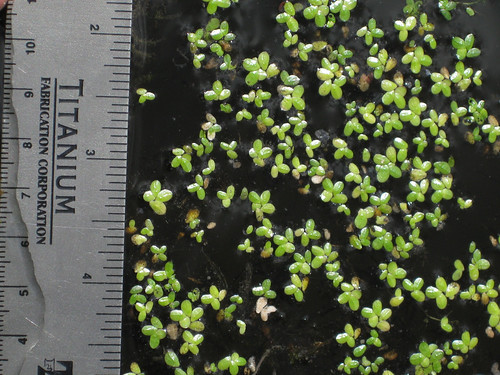
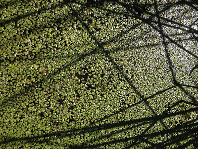
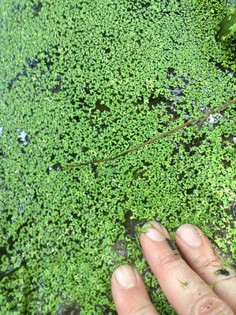

Duckweed
Scientific name: Spirodela polyrhiza, Lemna minor
Abundance: plentiful
What: whole plant
How: puree and add to soups and stews, saute in oil or butter, dry then powder for a food additive
Where: still water open to the sun
When: summer
Other uses: Dry, crush, then rub on skin to use as an insect repellent.
Nutritional Value: high in protein
Dangers: this plant must be cooked to kill any dangerous aquatic microbes
During the warm summer months Duckweed will completely cover sunny, still or slow-moving waters. These plants are the fastest at reproducing known, doubling in surface coverage every two days. One type, Wolffia microscopica, can bud off new plants in as little as 30 hours! Many private lake owners hate the look of a green-covered lake and pump in poisons to kill it...which sucks because among other things this covering of duckweed can suppress mosquito populations.
Dried duckweed contains 25-45% protein, 4% fat, and 8-10% fiber, which is kind of amazing. Boil it to kill any aquatic microbes which could cause sickness in humans. Because it is so high in protein and grows so fast it is a favorite for use by smart people for chicken and hog food. Really smart people use the dried, powdered duckweed to kick up the nutritional values of their own food.